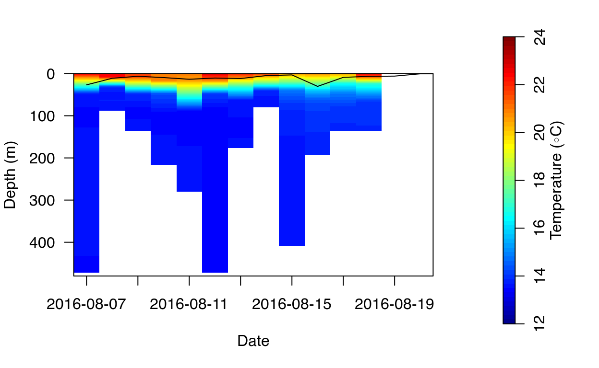
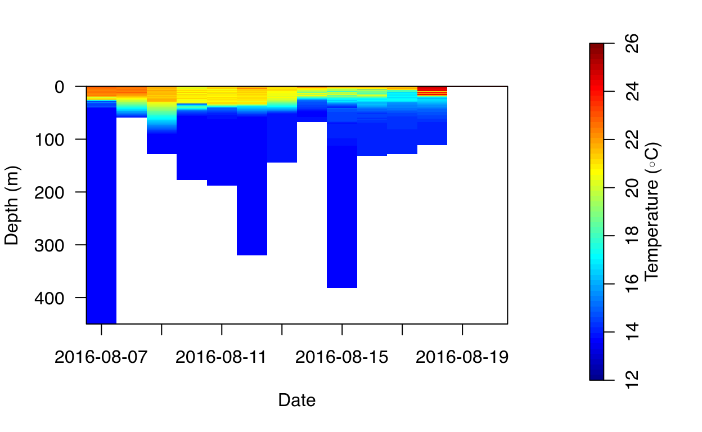
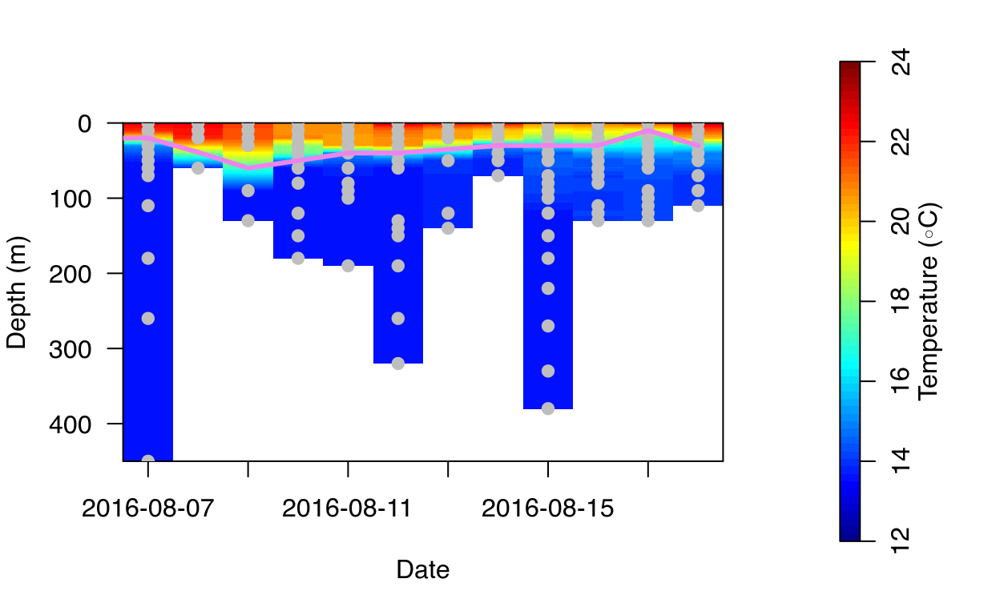
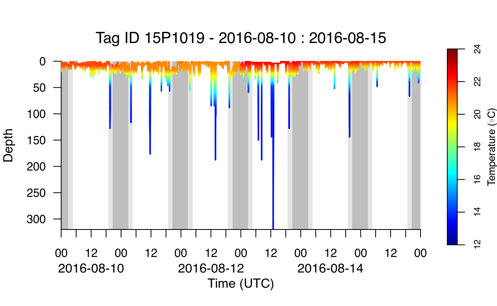

In this third part of the RchivalTag tutorial series, we will learn how to explore PAT-Style depth temperature profiles, a special data product of (pop-up) archival tags from Wildlife Computers to analyze the thermal structure of the water column that requires far less ARGOS transmissions than temperature time series data.
To run this tutorial we will need RchivalTag version >= 0.1.5 and oceanmap version >= 0.13. You can find the newest versions of both packages on github
## install or load package
# install.packages("RchivalTag") # from CRAN
# library(xfun)
# install_github("rkbauer/oceanmap") # newest version from github
# install_github("rkbauer/RchivalTag") # newest version from github
library("RchivalTag")
## Package overview and version:
?RchivalTag
help(package="RchivalTag") ## list of functionsIn the 2nd tutorial we already covered different ways to illustrate depth temperature data from archival tags such as
Another, third option represents the daily depth-temperature profiles that can be obtained from depth-temperature time series data or PAT-Style depth temperature profiles.
PAT depth temperature profiles are a special summary product from WC. They return the minimum and maximum temperature in the 8 to 16 depth bins. The bin size is always 8 m. The selection and number of depth bins depends on the behavior of the fish. If the tag went deeper than 400 m, 16 depth bins are selected, otherwise only 8. The upper and lower most depth bins are always included. The remaining 6 to 14 bins are selected based on the behavior preferences of the fish, i.e. the most frequented depth bins are being selected.
I have attached a histogram and some sample data to illustrate the selection. First the depth time series data is internally aggregated to 8 m depth bins by the tag, as illustrated by the histogram. Then, the upper and lower most depth bins are selected as well as the 6 most frequented depth bins:
Unfortunately we can not influence the selection process of the depth bins but we need to keep it in mind when we wish to exploit the data. In case of epipelagic fish (that frequent the waters from the surface to the bottom of the thermocline and beyond), we can infer some useful information about the thermal stratification. But first, let’s have a look on the format of a PDT file from WC:
path <- system.file("example_files",package="RchivalTag")
setwd(path)
PDT_raw <- read.csv("104659-Series.csv")
names(PDT_raw) [1] "DeployID" "Ptt" "DepthSensor"
[4] "Source" "Instr" "Day"
[7] "Time" "LocationQuality" "Latitude"
[10] "Longitude" "Depth" "DRange"
[13] "Temperature" "TRange" We can see that all depth bins as well as the corresponding minimum and maximum temperature values are listed next to each other in the header of the PDT file. To transform this into a meaningful data.frame, RchivalTag comes with its own function to read and convert PDT files:
PDT <- read_PDT("104659-PDTs.csv",folder=path)running pdt_file /home/work/R/x86_64-pc-linux-gnu-library/4.3/RchivalTag/example_files/104659-PDTs.csv str(PDT,1)'data.frame': 127 obs. of 10 variables:
$ pdt_file: chr "/home/work/R/x86_64-pc-linux-gnu-library/4.3/RchivalTag/example_files/104659-PDTs.csv" "/home/work/R/x86_64-pc-linux-gnu-library/4.3/RchivalTag/example_files/104659-PDTs.csv" "/home/work/R/x86_64-pc-linux-gnu-library/4.3/RchivalTag/example_files/104659-PDTs.csv" "/home/work/R/x86_64-pc-linux-gnu-library/4.3/RchivalTag/example_files/104659-PDTs.csv" ...
$ DeployID: chr "15P1019" "15P1019" "15P1019" "15P1019" ...
$ Ptt : int 104659 104659 104659 104659 104659 104659 104659 104659 104659 104659 ...
$ NumBins : int 8 8 8 8 8 8 8 8 16 16 ...
$ Depth : num 0 24 104 176 192 288 328 384 0 16 ...
$ MinTemp : num 18 15 13.4 13.4 13.4 13.6 13.6 13.6 21.4 16.4 ...
$ MaxTemp : num 23.2 21.8 14 13.8 13.8 13.8 13.6 13.6 23.8 22.4 ...
$ datetime: POSIXct, format: "2016-08-07 08:00:00" ...
$ date : Date, format: "2016-08-07" ...
$ MeanPDT : num 20.6 18.4 13.7 13.6 13.6 13.7 13.6 13.6 22.6 19.4 ...This looks better. We have now all depth bins and related temperature values as well as the mean temperature from the minimum and maximum temperature listed in rows. The latter is not exactly the average temperature of a depth bin, but often close to it.
Like other summary products the number of PDTs per day depends on the summary period (6h, 12h, 24h). Our PDT file had a 24h summary period (which we can see from the datetime values).
The PDT data itself is not yet really helpful, but we can interpolate the MeanPDT temperature values and visualize the resulting profile. RchivalTag comes with 2 functions to do this. First we interpolate the data:
m <- interpolate_PDTs(PDT, verbose=FALSE)
str(m,2)List of 1
$ station.1:List of 4
..$ Temperature_matrix: num [1:961, 1:15] 20.6 20.6 20.5 20.5 20.4 ...
..$ Depth : num [1:961] 0 0.5 1 1.5 2 2.5 3 3.5 4 4.5 ...
..$ Date : Date[1:15], format: "2016-08-07" ...
..$ sm :'data.frame': 15 obs. of 3 variables:The result is a list of stations with each station corresponding to a specific tag in the PDT file (In some cases there are several tags in one PDT file). Each station comes with a temperature matrix that is defined by the depth and date values.
We can visualize the daily interpolated depth temperature profiles by running the next chunk of code.
image_TempDepthProfiles(m[[1]])
abline(h=30,lty="dashed",col="violet",lwd=3)We could add some external data, like the average depth of our tagged animal on top:
image_TempDepthProfiles(m[[1]])
ts_file <- system.file("example_files/104659-Series.csv",package="RchivalTag")
ts_df <- read_TS(ts_file)
library(plyr)
ts_stats <- ddply(ts_df,c("date"),function(x) c(avg=mean(x$Depth,na.rm=T), SD=sd(x$Depth,na.rm=T)))
lines(ts_stats$date+.5,ts_stats$avg)
This does not look not bad. It appears that our fish spent most of the time above the thermocline. But what is the depth of the thermocline? There are several definitions to estimate the thermocline and other thermal stratification indicators. RchivalTag can estimate several thermal stratification indicators from interpolated depth temperature profiles such as:
For more details and references, please see the documentation of the get_thermalstrat function.
# ?get_thermalstrat ## check documentation
strat <- get_thermalstrat(m, all_info = T, verbose = FALSE)
head(strat,3) Date nrecs
1 2016-08-07 8
2 2016-08-08 16
3 2016-08-09 7
Depths
1 0;24;104;176;192;288;328;384
2 0;16;48;80;128;160;176;208;240;272;304;336;368;424;432;472
3 0;8;32;48;64;72;88
maxDepth_interp tgrad tcline dz mld mld_0.5 mld_0.8 strat_index
1 384.5 1.833333 12.00 20 0.0 5 9 1.855061
2 472.5 3.912500 10.00 20 0.0 2 4 2.870580
3 88.5 7.000000 19.75 20 9.5 9 10 3.158587
strat_lim ID
1 100 station.1
2 100 station.1
3 100 station.1image_TempDepthProfiles(m[[1]])
lines(strat$Date-.5,strat$tcline,col="violet",lwd=3)The results above look very interesting and it underlines the informational value of the PDT data. It is fascinating to see which information we can get by just 8-16 temperature values. However, the biggest problem is the spacing of the daily PDT depth values. We can see this in the following figure. On 2016-08-11, the fish spent more time in deeper waters, but still above 400 m. As a result, we lack information in the relevant depth layer of the thermal stratification. Since we are the interpolation is linear, the warm water masses and thus the thermocline reaches deeper on that day than it probably should. I therefore recommend to take a look on the number of records within the first 100 m of the water column. If we have around 8 values here, the estimates are less biased.
The limitations mentioned above affect the reliability of the maximum temperature gradient and thus the thermocline estimates. A higher sampling resolution of the PDT-data (or the use of depth temperature time series data) yields often better estimates, since we increase the number of sampling points in the relevant depth layer, but only if the fish spent time below and above the thermocline. In any case, the stratification index is much more robust to the lack of data and thus more reliable than both the thermocline depth and the thermocline gradient and thus should be used in modelling exercises.
image_TempDepthProfiles(m[[1]])
points(PDT$date-.5,PDT$Depth,pch=19, col="grey")Another more accurate way, is to interpolate the depth-temperature time series data. The loaded PDT data actually resembles this type of data.
# ## step I) read sample time series data file:
ts_file <- system.file("example_files/104659-Series.csv",package="RchivalTag")
DepthTempTS <- read_TS(ts_file)
M <- interpolate_TempDepthProfiles(DepthTempTS, verbose = FALSE)
image_TempDepthProfiles(M[[1]])
In the example above, we see a lot of small temperature changes in the upper 50 m. This is an artifact of the interpolation process and the data resolution. The time series data in the example above is a transmitted data set with a temporal resolution of 10 min. As a consequence, many depth-temperature values between the different sampling points are missing, resulting in the interpolation of distant temperature values, like in the PDT data earlier. Moreover, since the fish moves between different water masses, certain depths were sampled less than others, which contributes to this bias. We can avoid this, by binning the data similar to the PDT data:
binned_ts <- bin_TempTS(DepthTempTS,res=10)
M2 <- interpolate_TempDepthProfiles(binned_ts,"MeanPDT", verbose = FALSE)
image_TempDepthProfiles(M2[[1]])
points(binned_ts$date-.5,binned_ts$Depth,pch=19, col="grey")
strat2 <- get_thermalstrat(M2, all_info = T, verbose = FALSE)
lines(strat2$Date-.5,strat2$tcline,col="violet",lwd=3)
The result looks quite similar. In terms of accuracy, the stratication index is less biased, and recommended for further use (e.g. in ecological modelling).
In the 2nd tutorial, we already saw how to visualize thermal profiles directly within the time series data based on resamples from interpolated PDT data.
ts_file <- system.file("example_files/104659-Series.csv",package="RchivalTag")
ts_df <- read_TS(ts_file)
ts_df$Temperature <- c()
ts_df$Lon <- 5; ts_df$Lat <- 43 # manual example, please take Lon/Lat data from (GPE3) model outputs for your analysis instead. (check get_geopos-function from RchivalTag)
ts_df <- classify_DayTime(ts_df)
pdt_file <- system.file("example_files/104659-PDTs.csv",package="RchivalTag")
PDT <- read_PDT(pdt_file)running pdt_file /home/work/R/x86_64-pc-linux-gnu-library/4.3/RchivalTag/example_files/104659-PDTs.csv
library(oceanmap)
data(cmap)
plot_DepthTempTS_resampled_PDT(ts_df,PDT,xlim = c("2016-08-10","2016-08-15"),plot_DayTimePeriods = T)
Theoretically, we can use the same resamples to reconstruct Time-at-Depth histograms. The accuracy of such estimates depends on the temperature bins as well as the accuracy of the PDT data.
ts_file <- system.file("example_files/104659-Series.csv",package="RchivalTag")
ts_df <- read_TS(ts_file)
path <- system.file("example_files",package="RchivalTag")
PDT <- read_PDT("104659-PDTs.csv",folder=path)running pdt_file /home/work/R/x86_64-pc-linux-gnu-library/4.3/RchivalTag/example_files/104659-PDTs.csv
m <- interpolate_PDTs(PDT,verbose = FALSE)[[1]]
# image_TempDepthProfiles(m)
out <- c()
for(i in 1:length(m$Date)){
Temp <- m$Temperature_matrix[,i]
add <- data.frame(date=m$Date[i],Depth=m$Depth,Temperature=Temp)
out <- rbind(out, add)
}
input <- ts_df; input$Temperature <- c()
ts_PDT <- merge(input, out, by=c("date", "Depth"), all.x=T)
tat_breaks <- c(10,12,15,17,18,19,20,21,22,23,24,27)
hist_tat(ts_df, bin_breaks = tat_breaks) ## time series data
hist_tat(ts_PDT, bin_breaks = tat_breaks) ## PDT dataIn this tutorial we saw the informational value and limitations of PDT and low resolution depth-temperature time series data. While the informational value and limitations of both data types are comparable, the selection of PDT data instead of temperature time series data increases the battery capacity and thus transmission success of pop-up archival tags. The paper by (Bauer, Forget, and Fromentin 2015) is highly recommended in this context.